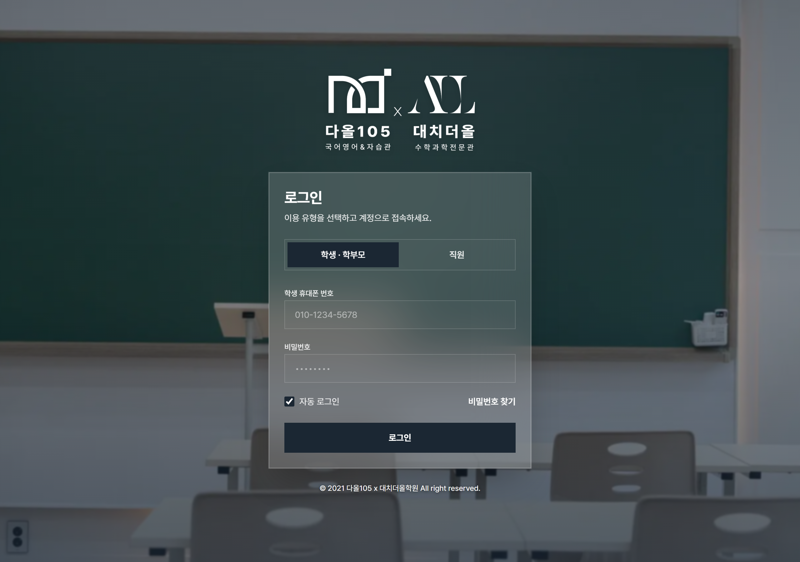
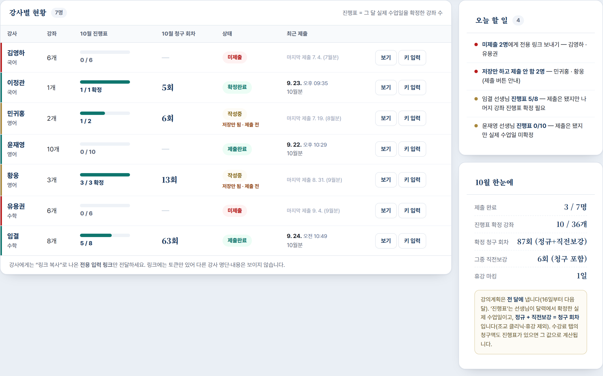
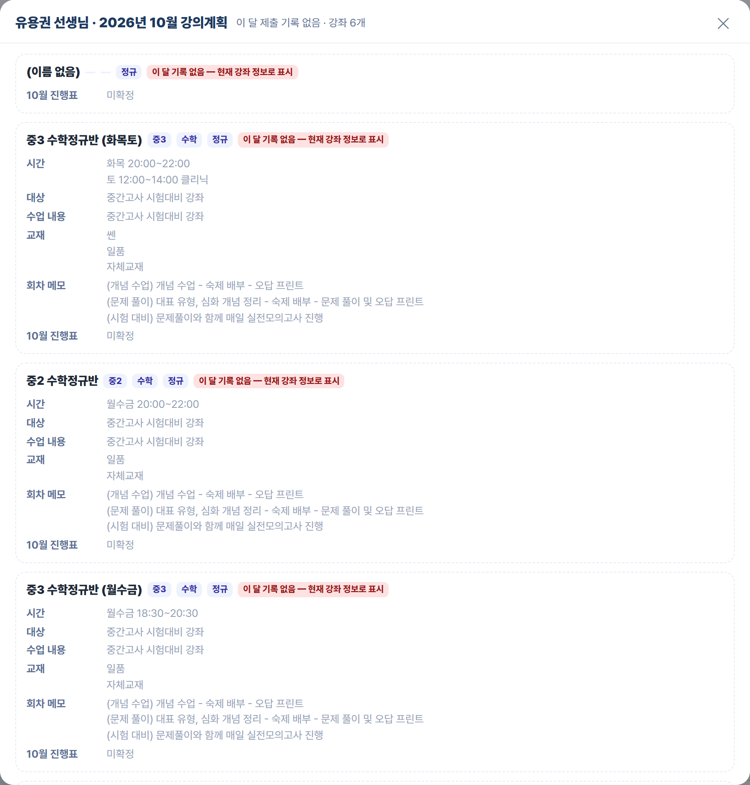
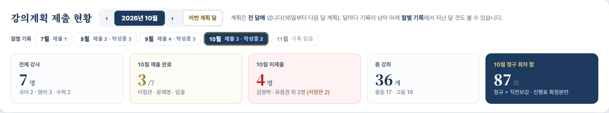
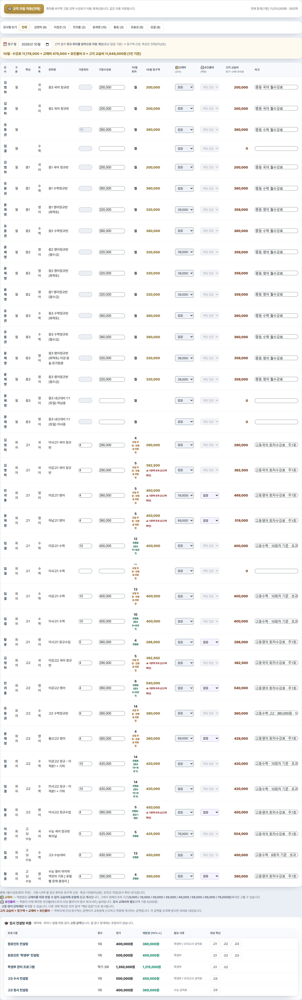

D A O L 1 0 5 · I N F O D E S K
강사 수업계획·수업일지 점검하는 법
선생님들이 계획을 제대로 냈는지, 일지가 쌓이고 있는지 — 매일 5분이면 확인됩니다.
⏱ 하루 5분 · 매일 같은 순서
먼저 알아두실 것 — 화면이 두 곳입니다. 학원 중앙시스템 (system.daol105.co.kr) — 수업계획·수업일지 ·출결·회차·수강료. 인포 계정으로 로그인 합니다.시간표앱 대시보드 (admin.html) — 강사 강의계획 제출 현황 ·진행표(실제 수업일)·강의실. 링크만 알면 열립니다.두 곳은 자동으로 연결되어 있지 않습니다. 그래서 양쪽을 다 봐야 빠지는 게 없습니다. (다음 달 중앙시스템으로 이관 예정)
A. 학원 중앙시스템 — 인포 계정으로 로그인
주소: system.daol105.co.kr

「학생 · 학부모」와 「직원 」 두 가지가 있습니다. 인포는 반드시 직원 을 누른 뒤 본인 계정 으로 로그인하세요.
(학생 탭에서는 학생 휴대폰 번호를 묻습니다 — 그건 우리 계정이 아닙니다.) 반드시 개인 아이디로 접속하세요. 원장님 계정으로 쓰면 원장님께 알림이 계속 뜹니다.
학생·학부모 개인정보가 많은 화면이라 본인 계정 으로만 들어갑니다.
로그인이 안 될 때 — ① 「직원」을 눌렀는지 ② 아이디 앞뒤 공백 ③ 비밀번호 찾기. 그래도 안 되면 원장님께.
중앙시스템은 강사가 수업계획을 만들어야 그 날 수업일지가 자동으로 생깁니다. 계획이 없으면 일지도 없고, 출결도 안 붙습니다.
왼쪽 메뉴에서 수업 관리 → 수업 계획 을 엽니다.
이번 달로 맞추고 강사별로 훑습니다. 반은 있는데 계획 줄이 비어 있는 반 을 찾습니다.
비어 있으면 그 선생님께 알려드립니다 — “이번 달 수업계획 일괄 생성 부탁드립니다”.
자동 알림이 없습니다. 계획이 빠져도 시스템이 알려주지 않습니다. 그래서 이 확인이 인포 업무로 정해져 있습니다(9/14 인수인계).
신규생이 중간에 들어오면 그 학생 일지는 자동으로 생기지 않습니다 — 선생님이 [생성] 을 눌러야 합니다.
3
매일 확인 — 수업일지가 쌓이고 있는가 / 출결
수업 관리 → 수업 일지 — 어제 날짜로 작성된 일지 수 가 그 날 수업 수와 맞는지 봅니다.비어 있는 반이 있으면 그 선생님께 알려드립니다.
출결 — ‘확인필요’가 쌓이면 키오스크 태그가 수업시간과 안 맞는 것입니다. 데스크가 수동으로 정리합니다.
지금 상태(9/26 확인) — 9월 출결이 ‘확인필요’ 위주로 쌓여 있고 정상 출석 처리가 거의 없습니다. 키오스크 태그 시간대·반 연결을 원장님과 함께 한 번 정리해야 합니다.
4
월 1회 — 회차 확정 → 수강료 생성 (정산 직전)
중앙시스템의 수강료는 「회차 관리」 에서 나옵니다. 순서가 정해져 있습니다.
회차 자동 산정 (다음 달분) — 원장·데스크가 다른 직원 없는 시간에 실행강사 확정 → 데스크 확정 → 원장 확인 (3단계가 다 끝나야 수강료가 생성됩니다)수강료 기준 에 미연결된 반 이 없는지 확인 — 연결이 없으면 그 반은 청구가 통째로 빠집니다수강료 생성 → 청구 상세 확인
실제로 있었던 사고 — 회차가 0으로 남아 있는 반이 원장 확인까지 통과해 재원생 2명의 9월 청구가 0건 이었습니다.
확정 전에 회차 0인 반 과 수강료 기준 미연결 반 을 반드시 눈으로 확인하세요.
10월분 지금 상태(9/26) — 회차 29건 중 28건이 아직 ‘미확인’입니다. 이대로면 10월 수강료를 만들 수 없습니다. 원장님께 확정 일정을 확인하세요.
B. 시간표앱 대시보드 — 강의계획 제출 현황
주소: admin.html (대시보드 탭). 링크만 알면 열립니다 — 별도 로그인은 없습니다.

왼쪽이 강사별 현황 , 오른쪽이 오늘 할 일 과 이 달 한눈에 입니다.
보이는 것 뜻 / 할 일 미제출 그 달 계획을 아직 안 냈습니다 → 「링크 복사」 로 전용 링크를 보내드립니다. 작성중 저장만 됨 · 제출 전 입력은 했는데 [작성 완료 제출] 을 안 눌렀습니다 → “제출 버튼만 눌러 주세요” 안내. 제출완료 제출은 됐습니다. 다만 진행표 칸이 다 안 찼으면(예: 0/10) 실제 수업일이 미확정이라 정산 근거가 비어 있습니다 . 확정완료 제출 + 모든 강좌 진행표 확정. 이 상태가 목표입니다. ○월 진행표 막대그 달 실제 수업일을 확정한 강좌 수 . 3/8이면 5개가 남은 것입니다. ○월 청구 회차 진행표에서 나온 정규 + 직전보강 합계. 조교 클리닉·휴강은 빠집니다.
「보기」 버튼 — 그 선생님이 그 달에 낸 계획 (강좌별 시간·대상·수업 내용·교재)과 날짜별 진행표 를 그대로 볼 수 있습니다. 상담 전화가 왔을 때 이 화면을 보고 답하시면 됩니다.

「보기」 를 누르면 이렇게 뜹니다. 날짜 칩(1정·5정·9휴…)이 그 달 진행표입니다.
6
지난 달 것도 볼 수 있습니다 — 「월별 기록」

맨 위 월별 기록 줄에서 달을 누르면 그 달 기준으로 표 전체가 바뀝니다. 칩 안 숫자는 제출 N · 작성중 N . 계획 달 규칙 — 15일까지 낸 것은 이번 달 , 16일부터 낸 것은 다음 달 계획입니다. 선생님 화면도 같은 규칙으로 보입니다.
미제출 N명에게 전용 링크 보내기 — 「링크 복사」 후 문자로.저장만 하고 제출 안 함 N명 — 제출 버튼만 누르면 되는 분들.진행표 N/M — 제출은 했지만 실제 수업일이 덜 찍힌 분들.원장 휴강인데 진행표는 수업 N건 — 원장님이 시험기간 일정표에서 휴강으로 잡은 날인데 선생님 진행표에는 수업으로 남아 있는 것입니다.
그대로 두면 그 날이 청구 회차에 들어갑니다 → 선생님께 확인 요청.

회차 칸 아래 작은 글씨가 그 숫자가 어디서 나왔는지 를 말해 줍니다.
표시 뜻 진행표 (정규 11+보강 1) 선생님이 확정한 실제 수업일 기준. 직전보강도 1회차로 포함 됩니다. 요일 추정 · 진행표 미확정 아직 진행표가 없어 요일 × 달력 으로 임시 계산한 값입니다. 정산 전에 선생님께 진행표를 받아야 합니다. ⚠ 진행표 0회 — 확인 필요 진행표는 저장했는데 수업일이 하나도 없습니다. 실수일 수 있어 요일로 계산해 두었습니다 — 반드시 확인. ⚠ 기준액 초과 (신고액 확인) 그 달 회차가 많아 청구액이 기준 수강료를 넘었습니다. 교습비 신고액 안에서만 청구할 수 있으니 원장님 확인이 필요합니다.
이 화면의 금액은 시간표앱의 계산 입니다. 실제 학부모 청구서는 중앙시스템의 회차 관리 → 수강료 생성 에서 나갑니다.
두 숫자가 다르면 그대로 두지 마시고 원장님께 알려 주세요(현재는 사람이 맞춰야 합니다).
C. 하루 5분 점검 순서 (이대로만 하시면 됩니다)
중앙시스템 로그인(직원) → 수업 계획 에 이번 달 빈 반이 있는가같은 곳 수업 일지 → 어제 일지가 다 쓰였는가
출결 → ‘확인필요’가 쌓이고 있는가시간표앱 대시보드 → 오늘 할 일 칸을 위에서 아래로 처리월말에 한 번: 수강료 탭 에서 요일 추정 ·진행표 0회 ·기준액 초과 가 남아 있는지
D. 자주 나오는 상황
상황 이렇게 하세요 선생님이 “링크를 못 받았다” 대시보드 강사 줄의 「링크 복사」 → 문자로 전달. (관리자 키가 필요하면 원장님께) 제출은 했는데 진행표가 0/N “강좌마다 📅 진행표를 열어 저장 해 주셔야 정산에 반영됩니다”라고 안내. 월중에 휴강이 생겼다 선생님이 본인 링크에서 [이번 달] 을 눌러 그 날을 휴강 으로 바꾸면 됩니다. 시험 직전 보강을 했다 선생님이 그 날을 직전보강 으로 찍습니다. 1회차로 청구 됩니다. 중앙시스템 수업계획이 비어 있다 “이번 달 수업계획 일괄 생성 ” 을 요청. 계획이 없으면 일지·출결이 안 붙습니다. 두 화면 숫자가 다르다 원장님께 보고. 지금은 자동 연동이 없어 사람이 맞춰야 합니다.
📌 이번 달까지는 「랠리즈」로 청구합니다. 다음 달부터 이 ADMIN 프로그램이 SYSTEM(중앙시스템)으로 이관될 예정 이며, 바뀌는 부분은 그때 따로 설명드리겠습니다.